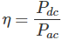

Single Phase Half Wave Rectifier
Aim
To study the input and output current and voltage waveforms of a single phase half wave rectifier.
Theory
A half wave rectifier is the simplest form of rectifier available. The diagram below illustrates the basic principle of a half-wave rectifier. When a standard AC waveform is passed through a half-wave rectifier, only half of the AC waveform remains. Half-wave rectifiers only allow one half-cycle (positive or negative half-cycle) of the AC voltage through and will block the other half-cycle on the DC side, as seen below.
Only one diode is required to construct a half-wave rectifier. In essence, this is all that the half-wave rectifier is doing.
Since DC systems are designed to have current flowing in a single direction, putting an AC waveform with positive and negative cycles through a DC device can have destructive (and dangerous) consequences. So we use half-wave rectifiers to convert the AC input power into DC output power. But the diode is only part of it – a complete half-wave rectifier circuit consists of 3 main parts:
- A transformer
- A resistive load
- A diode
A half-wave rectifier looks as shown below:
Working
During the positive half cycle of the AC voltage, the diode will be forward biased and the current flows through the diode. During the negative half cycle of the AC voltage, the diode will be reverse biased and the flow of current will be blocked. The final output voltage waveform on the secondary side (DC) is shown
Ripple Factor of Half Wave Rectifier
‘Ripple’ is the unwanted AC component remaining when converting the AC voltage waveform into a DC waveform. Even though we try out best to remove all AC components, there is still some small amount left on the output side which pulsates the DC waveform. This undesirable AC component is called ‘ripple’. The formula for ripple factor is:
Efficiency of Half Wave Rectifier
Rectifier efficiency (η) is the ratio between the output DC power and the input AC power. The formula for the efficiency is equal to:
RMS value of Half Wave Rectifier
To derive the RMS value of half wave rectifier, we need to calculate the current across the load. If the instantaneous load current is equal to iL = Imsinωt, then the average of load current (IDC) is equal to:
Applications of half wave rectifier
- For rectification applications
- For signal demodulation applications
- For signal peak applications
Advantages of half wave rectifiers
The main advantage of half-wave rectifiers is in their simplicity. As they don’t require as many components, they are simpler and cheaper to setup and construct. As such, the main advantages of half-wave rectifiers are:
- Simple (lower number of components)
- Cheaper upfront cost (as there is less equipment. Although there is a higher cost over time due to increased power losses)
Disadvantages of half wave rectifier
- They only allow a half-cycle through per sinewave, and the other half-cycle is wasted. This leads to power loss.
- They produce a low output voltage.
- The output current we obtain is not purely DC, and it still contains a lot of ripple (i.e. it has a high ripple factor)
- Select the Half Wave Rectifier experiment from the experiments list.
- Go to the simulator.
- Observe the circuit diagram. It consists of AC supply(Vab), a Step Down Transformer to change the level of voltage, a diode and a Resistive load(RL).
- Now click on the simulate button.
- On clicking the button you can observe that when the ac supply is switched on the alternating voltage Vab appears across the primary winding of the transformer.
- This high voltage Vab is reduced to a level which is suitable for the diode and the load at secondary winding and it is represented by Vcd.
- When this alternating voltage Vcd is applied across the DC load having a diode in series with it, during the positive half cycle the terminal c becomes positive and terminal d becomes negative.
- Under this condition, the diode is forward biased i.e the anode is at a higher potential than the cathode.
- As a result, the diode behaves like a closed switch and a positive cycle appears across the load and current flows through the load resistor RL.
- As seen in the simulation this current varies in magnitude(red wave).
- Hence the positive cycle of output voltage V0 = I * RL appears across the load resistor RL.
- During the negative half-cycle, the terminal c is negative and d becomes positive and the diode is reverse biased.
- Under this condition, the diode does not conduct and no current flows through the circuit.
- Therefore during the negative half cycle of the input, no voltage appears across the load resistance RL .
- This process will continue until any one of the source or load is disconnected.